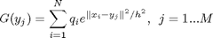

GaussTransform
Contents
Syntax
[G]=GaussTransform(d,N,M,X,h,q,Y)
Description
Direct computation of the Gauss Transform.

C++ Implementation.
Loads GaussTransform.dll
Input
- d --> data dimensionality.
- N --> number of source points.
- M --> number of target points.
- X --> d x N matrix of N source points in d dimensions.
- h --> source bandwidth or scale.
- q --> 1 x N vector of the source strengths.
- Y --> d x M matrix of M target points in d dimensions.
Ouput
- G --> 1 x M vector of the Gauss Transform evaluated at each target point.
Signature
- Author: Vikas Chandrakant Raykar
- E-Mail: vikas@cs.umd.edu
- Date: 08 July 2005